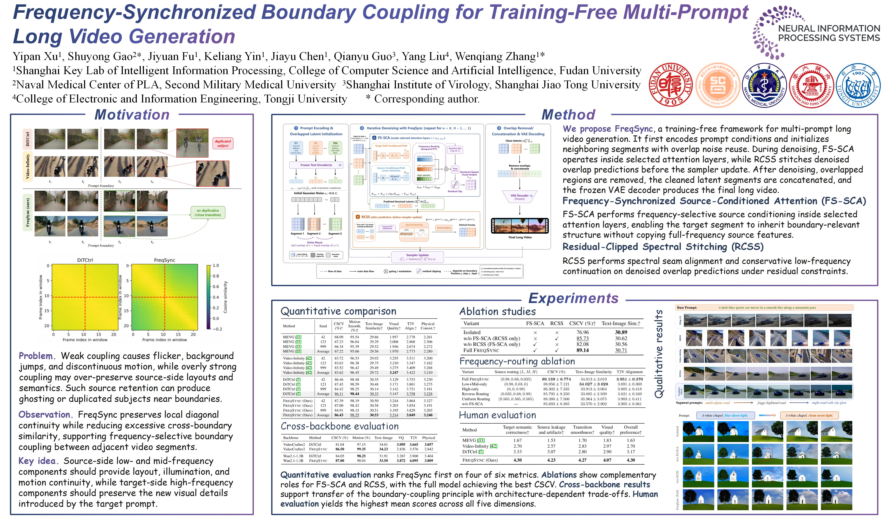

Text-to-video generation has made remarkable progress with diffusion models and transformer-based video architectures, yet generating coherent long videos from evolving textual descriptions remains challenging. Training long-video models from scratch requires substantial computation and large-scale multi-event data, while training-free multi-prompt generation must activate new prompt semantics without breaking temporal continuity. We identify a frequency-agnostic boundary coupling problem in existing transition strategies: weak coupling causes abrupt changes, flicker, and background jumps, whereas overly strong or coarse coupling may over-preserve source semantics and produce ghosting or duplicated subjects around prompt boundaries. To address this problem, we propose FreqSync, a training-free framework that formulates prompt transitions as frequency-selective boundary coupling. FreqSync combines Frequency-Synchronized Source-Conditioned Attention (FS-SCA) with Residual-Clipped Spectral Stitching (RCSS), enabling adjacent segments to share stable low- and mid-frequency structure and motion cues while keeping high-frequency prompt-specific details target-dominant under explicit residual constraints. Extensive experiments show that FreqSync achieves state-of-the-art transition smoothness and prompt alignment while maintaining strong perceptual video quality, demonstrating its effectiveness for coherent multi-prompt long video generation.
Frequency-Synchronized Boundary Coupling for Training-Free Multi-Prompt Long Video Generation
1 Shanghai Key Lab of Intelligent Information Processing,
College of Computer Science and Artificial Intelligence, Fudan University
2 Naval Medical Center of PLA, Second Military Medical University
3 Shanghai Institute of Virology, Shanghai Jiao Tong University
4 College of Electronic and Information Engineering, Tongji University
NeurIPS 2026
* Corresponding authors
Abstract
Method

Overview of FreqSync. Given a prompt sequence, FreqSync first encodes frozen text conditions and initializes overlapped latent segments with noise reuse. During iterative denoising, FS-SCA performs frequency-synchronized source-conditioned attention inside selected attention layers, while RCSS applies residual-clipped spectral stitching to denoised overlap predictions before the sampler update. After denoising, overlapped regions are removed and the clean latent segments are concatenated for VAE decoding, producing the final long video.
FS-SCA transfers low- and mid-frequency continuity cues while preserving target-dominant details, and RCSS aligns denoised overlap predictions under residual constraints for stable stitching. Extensive quantitative, qualitative, diagnostic, and ablation results demonstrate that FreqSync improves transition smoothness, prompt alignment, and overall video quality without additional training, providing an effective solution for coherent multi-prompt long video generation.
Qualitative Comparisons
We compare FreqSync with MEVG, Video-Infinity, and DiTCtrl on a three-prompt driving sequence: a sunlit alpine road, a foggy highland road, and a night road with city glow. FreqSync preserves vehicle identity and motion while producing smoother semantic transitions.
Ablation Study
We visualize a transition from blue dawn light to clean noon light. Isolated generation produces a hard cut. RCSS alone smooths the overlap region but lacks attention-level semantic handover. FS-SCA alone preserves the global layout but changes the chapel structure. Full FreqSync combines both modules for smooth transitions and stable identity.
More FreqSync Demos
Poster

BibTeX
@inproceedings{xu2026freqsync,
title = {Frequency-Synchronized Boundary Coupling for Training-Free Multi-Prompt Long Video Generation},
author = {Xu, Yipan and Gao, Shuyong and Fu, Jiyuan and Yin, Keliang and Chen, Jiayu and Guo, Qianyu and Liu, Yang and Zhang, Wenqiang},
booktitle = {Advances in Neural Information Processing Systems},
year = {2026},
url = {https://yipanxu-22.github.io/FreqSync-project/}
}